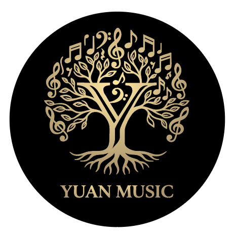

"Praise him with the sounding of the trumpet, praise him with the harp and lyre, praise him with timbrel and dancing, praise him with the strings and pipe."
“要用角声赞美他，鼓瑟弹琴赞美他；
击鼓跳舞赞美他，用丝弦的乐器和箫的声音赞美他。”
— PSALM 150:3-4 | 诗篇 150:3-4
Rooted in Faith, Excellence, and Community
Love is the source of music.
Yuan Music is dedicated to being a small oasis amidst the fast-paced life of Silicon Valley, nurturing aesthetic appreciation through music education and nourishing the heart with art.
Music also belongs to every adult willing to slow down and rediscover themselves, creating a sacred space for artistry within a busy world.
Rooted in Christian values, we aim to inspire excellence and share the light of music with our community.
"Each of you should give what you have decided in your heart to give... for God loves a cheerful giver." (2 Cor 9:7)
We commit 10% of our profits to support local churches and non-profit organizations.